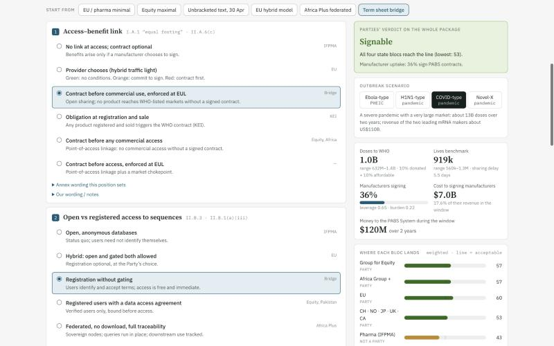

Coordinator testing
Seek three to five coordinators to test usefulness and correct the initial group coding.
Review gateEvidence that the tool helps a real negotiating task.
WHO Pandemic Agreement
A simulation tool for the negotiations
Making the consequences of a whole negotiating package visible before the next pandemic.
The proposal concerns a tool to simulate the consequences of packages for the Pathogen Access and Benefit-Sharing (PABS) Annex. The current browser-based model exists. This proposal seeks support for the next prototype and its independent review.
The conference-room illustration comes from the project’s existing Black Forest Labs FLUX 3 assets. It does not depict an actual WHO meeting.
The negotiating context
The Pandemic Agreement opens for signature after the World Health Assembly adopts the PABS Annex.
Delegations need a clearer view of what different terms would deliver, and which differences still require agreement.
Member States establish the framework.
The on-screen annex text reproduced in A79/8.
The next scheduled negotiating session.
Scheduled consideration of the negotiation outcome.
The outcome may go to an earlier special Assembly session as necessary. This proposal does not assume adoption on a guaranteed date.
The policy question
How can pathogen materials and sequence information move quickly enough to support research and response?
How can the system secure enforceable commitments to products, finance and technology?
The tool makes the consequences of different combinations available for discussion.
The source proposal contrasts linkage and enforceability concerns with concerns about barriers to rapid sharing. These views do not map perfectly onto two uniform camps. The rebuild therefore presents the policy questions without assigning every country or manufacturer an identical position.
Baseline: A79/8. The original proposal also drew on public statements and attributed reporting from Third World Network and Health Policy Watch.
The existing prototype

Set positions across all seven linked issues.
Examine doses, contributions and modeled support.
Explore changes across outbreak scenarios.
Carry the assumptions and trade-offs into discussion.
The current app supports whole-package choices, scenario outputs, comparison, suggested bridging candidates, adjustable group priorities and a text brief. The next design stage should lead with a concise briefing and reveal detailed controls when needed.
Only the four coded state groups determine the model’s support test. Manufacturer participation is separate. Neither output predicts actual consent or real-world participation.
Package design
| Issue | Choices represented in the model | An illustrative bridging term |
|---|---|---|
| 01 Access–benefit link | Optional contracts to contract before access | Contract before commercial use, enforced at WHO Emergency Use Listing |
| 02 Sequence access | Open access to controlled or federated access | Registration without delaying access |
| 03 Contracting | Willing manufacturers to all users | Tiered contracts included in the annex |
| 04 Finance | Operating costs to revenue-linked payments | Subscription plus a revenue share above a threshold |
| 05 PHEIC supply | No specified floor to a fixed set-aside | A minimum contractual floor for in-scope pathogens |
| 06 Licensing | Voluntary offers to mandatory licences | Standby licences triggered by unmet WHO need |
| 07 National ABS laws | Displacement to national-law fallback | Fallback after a finding of non-delivery |
ABS means access and benefit-sharing. PHEIC means public health emergency of international concern. The seven terms correspond to the existing model’s issue families. The table summarizes the range represented in the tool, not a definitive account of any negotiating group’s current position.
The model’s source text is A79/8. Group coding and bridging proposals require coordinator review.
What the model can illuminate
COVID-type scenario. Common zero baseline. Existing preset names.
doses under one illustrative bridging package
All four coded state groups meet the model’s support test. That result depends on the assumptions and does not establish actual agreement.
Recomputed from the current app’s pure model using its default COVID scenario and priorities. Doses to WHO: minimal 347.319M, maximal 65.391M, EU hybrid 981.896M, Africa Plus 396.566M, bridge 1,038.488M. Manufacturer participation: 33.4%, 2.0%, 37.8%, 13.9% and 36.3% respectively.
The bridge’s lowest coded group score is 53 against a threshold of 50, with no coded veto. Scores summarize assigned reactions and weights. They do not constitute probabilities, actual agreement or a legal adoption rule.
The bridge is one passing package among these presets. The tool does not establish that it is an optimum. Country allocations and deaths avoided require additional assumptions and validation.
Trust and delegation control
Exploration carries no negotiating commitment. A delegation decides what to test and what to share.
The existing simulation computes locally and stores saved packages and custom weights in browser storage. Its share code includes positions and notes, so notes can contain identifying information. Hosting and external font services may receive normal connection metadata.
The proposed agent-assisted prototype needs a separate security and data-governance design. Do not describe that future service as if it shares the current browser-only privacy boundary.
Proposed next stage
A narrowly scoped text-reading agent would connect a delegation’s current draft to the existing package model.
The delegation supplies its own copy of the current draft.
The agent maps issues and brackets, citing the relevant paragraph.
A user confirms the mapping and sees any wording the model cannot cover.
The model produces comparisons, suggested alternatives and a brief.
Proposed implementation: the current web model plus an isolated text-agent session for each delegation. Data residency and retention require agreement with the host.
The original proposal identifies a Claude Managed Agent for interpretation, attached to the static web app. The model remains responsible for calculations. The agent must cite the text it reads, expose uncertainty and say when wording lies outside the model’s scope.
A separate session per delegation is a proposed isolation measure. A neutral host, approved data residency, retention policy, access controls and a security review are prerequisites for closed-session text.
Proposed delivery roadmap
Seek three to five coordinators to test usefulness and correct the initial group coding.
Review gateEvidence that the tool helps a real negotiating task.
Private text handling, cited interpretation, sourced scenario inputs and security review.
Review gateUsable text mapping and an approved privacy design.
Historical calibration, independent review across groups and a plan for six UN languages.
Review gateAgreed evaluation criteria and a published limitations record.
Maintain the tool through Assembly consideration and plan a subsequent handover.
Review gateContinued demand and an agreed host.
These are proposed project targets carried forward from the October 2026 plan, not commitments or completed milestones. IGWG-9 is scheduled for 2–13 November 2026. WHA80 is scheduled for 23–30 May 2027.
The July workplan lists reserved dates of 15–19 March 2027. Do not equate those with a confirmed IGWG-10 meeting or assume February. An earlier special Assembly depends on negotiating progress.
Planned calibration references include H1N1 2009, PIP, COVID-19 and mpox. Planned language coverage is all six UN languages.
Indicative resources
| Phase | Planning estimate, US$ |
|---|---|
| 01 Working prototypeTarget: late November 2026 | 70k–120k |
| 02 Validation and independent reviewFollowing the prototype | 250k–400k |
| 03 Support through WHA80Through May 2027 | 100k–150k |
| TotalApproximately seven months | 420k–670k |
The ranges preserve the source proposal exactly: Phase 1 US$70,000–120,000, Phase 2 US$250,000–400,000, Phase 3 US$100,000–150,000. The resulting total is US$420,000–670,000. These are planning ranges, not supplier quotations or secured funding.
The original plan envisages a small core team with specialist legal and model review. A detailed cost breakdown, procurement plan and delivery scope remain to be agreed.
Proposed safeguards
A host trusted across negotiating groups.
Seek funding from outside the parties to the negotiation, with a published method and a balanced review panel.
The same model, with assumptions that every group can challenge.
The original proposal calls for a neutral host, a review panel drawn from every modeled group, published methods and weights, and funding from no party to the negotiation. These are proposed safeguards, not confirmed appointments.
Reviewer balance, conflicts of interest, model revisions, security responsibilities and the right to correct coding should be documented before any operational pilot.
The next step
A working prototype that delegations can test, challenge and help improve.
Indicative funding for the working prototype, from outside the negotiation.
Seeking participation across negotiating groups on equal terms.
An institution trusted to convene review and agree the privacy framework.
Seek discussion of Phase 1 support, three to five volunteer coordinators and an independent host. These are requests, not secured commitments.
The project address is taken from the existing outreach materials. The existing prototype can demonstrate the calculation workflow, with its limitations visible. A pilot should define usefulness, evaluation and privacy requirements before widening deployment.